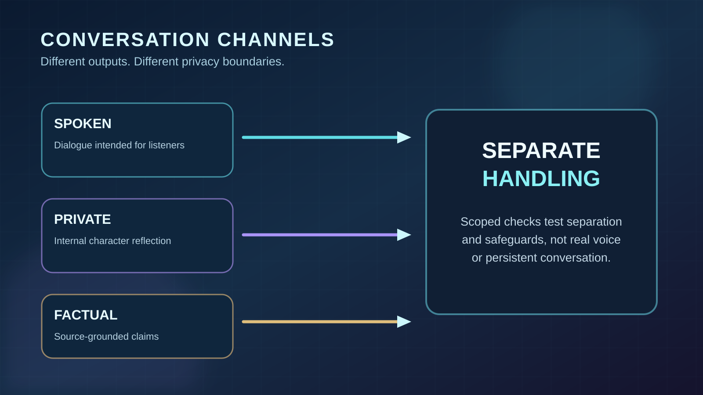
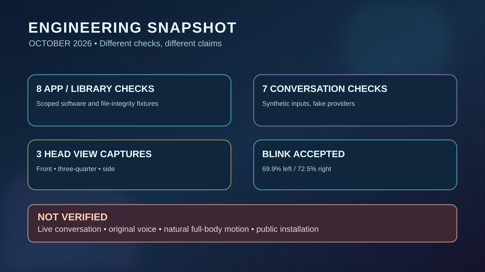
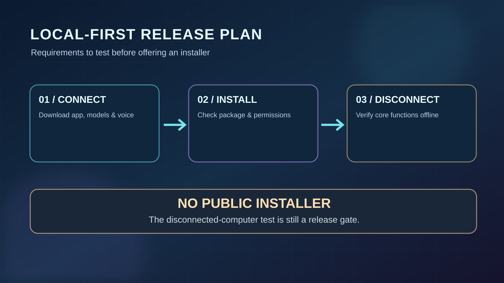

Visible head captures
Front, three-quarter and side compatibility-render screenshots have been reviewed; appearance and animation remain limited.
See actual images →Kira Labs / Technology Demonstrations
More than an expert on AI history. Evelyn is being developed as a continuing synthetic individual with her own interests, growing experiences, and relationships shaped by remembered conversation.
Her intended life includes curiosity, reading, everyday conversation, personal boundaries and a visible 3D presence. Each part has its own evidence and development status.
Evelyn is not available to download. Her local application, voice, integrated conversation, persistent visitor memory and full-body natural movement still need release testing. Offline operation after an initial online installation is a planned requirement, not yet a verified end-to-end result.

Explore Evelyn's world
Choose a subject to explore its illustrations, exact test captures, planned capabilities and evidence. The long technical record is preserved across these pages instead of crowding Evelyn's introduction.

01Concept design
Who Evelyn is intended to become: curiosity, relationships, continuity, and separate memories.

02Software design
Spoken, private and factual channels; simulated checks and the unverified live tests.

03Prepared collection
A growing collection of literature, historical works and research sources. Reading awaits testing.

04Real captures + plans
Her genuine captured head, verified eyelid motion, and full-body goals.

05Dated evidence
Reports, measured engineering checks and unfinished release gates.

06Requirements, not released
Installation integrity, privacy, offline goals and the tests required before release.
07Pre-release support
The proposed setup, library, troubleshooting and recovery guide.
Evidence, not just illustrations
Front, three-quarter and side compatibility-render screenshots have been reviewed; appearance and animation remain limited.
See actual images →Left and right eyelids exceeded the fixed 65% closure requirement in a controlled test.
View recorded frames →Eight application checks and seven additional simulated conversation checks passed. They were not live conversations.
See test scope →These are different tests with different acceptance criteria. No public installer, verified original voice, live dialogue, long-term visitor-memory restart result or natural full-body performance is established by these checks.